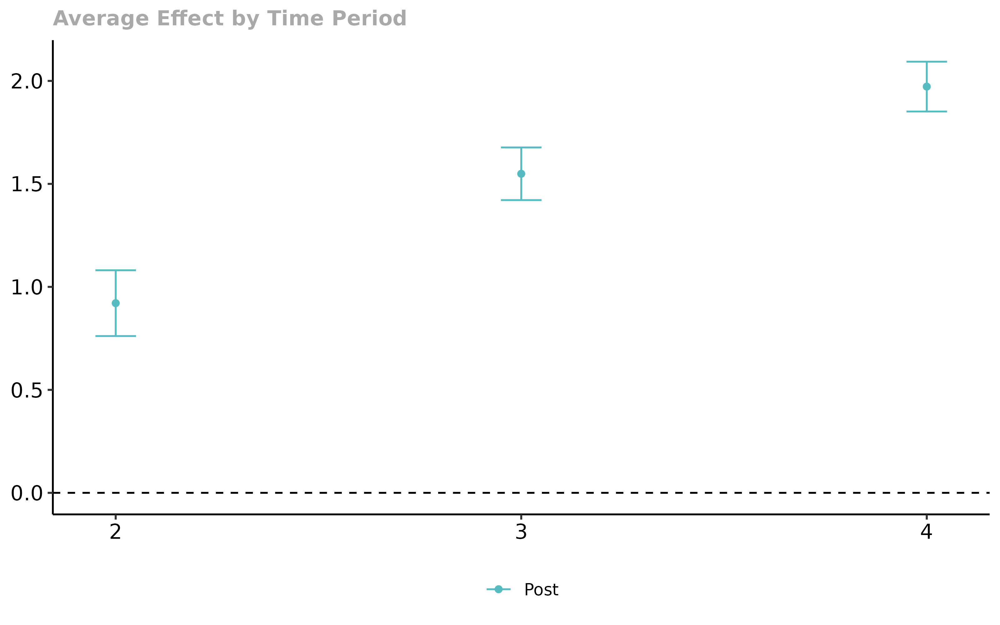

Getting Started with the did Package
Brantly Callaway and Pedro H.C. Sant'Anna
2020-04-02
did-basics.RmdThis vignette discusses the basics of using Difference-in-Differences (DID) designs to identify and estimate the average effect of participating in a treatment with a particular focus on tools from the did package.
Examples with simulated data
Let’s start with a really simple example with simulated data. Here, there are going to be 4 time periods. There are 4000 units in the treated group that are randomly (uniformly) assigned to first participate in the treatment (a group) in each time period. And there are 4000 never treated units. The data generating process for untreated and treated potential outcomes is given by
\[ Y_{it}(0) = \theta_t + \eta_i + X_i'\beta_t + v_{it} \]
\[ Y_{it}(1) = \theta_t + \eta_i + X_i'\beta_t + u_{it} \]
where \(\theta_t = \beta_t = t\) for \(t=1,\ldots,4\), \(\eta_i \sim N(G_i, 1)\) where \(G_i\) is which group an individual belongs to, \(X_i \sim N( \mu_{D_i}, 1)\) where \(\mu_{D_i} = 1\) for never treated units and 0 otherwise, \(v_{it} \sim N(0,1)\), and \(u_{it} \sim N(0,1)\). Also, all random variables are drawn independently of each other. In this setup \(ATT(g,t) = 0\) for all groups and time periods.
Estimating Group-Time Average Treatment Effects
Building the dataset
# generate dataset with 4 time periods time.periods <- 4 # generate data set with these parameters data <- build_sim_dataset() nrow(data) #> [1] 27952 head(data) #> G X id period Y treat #> 1 2 0.530541 1 1 4.795125 1 #> 8001 2 0.530541 1 2 6.159789 1 #> 16001 2 0.530541 1 3 6.482624 1 #> 24001 2 0.530541 1 4 8.288278 1 #> 2 4 1.123550 2 1 4.375698 1 #> 8002 4 1.123550 2 2 9.285481 1
Estimating Group-Time Average Treatment Effects
The main function to estimate group-time average treatment effects is the att_gt function. See documentation here. The most basic call to att_gt is given in the following
# estimate group-time average treatment effects using att_gt method example.attgt <- att_gt(yname="Y", tname="period", idname="id", first.treat.name="G", xformla=~X, data=data, printdetails=FALSE ) # summarize the results summary(example.attgt) #> #> Reference: Callaway, Brantly and Sant'Anna, Pedro. "Difference-in-Differences with Multiple Time Periods." Working Paper <https://ssrn.com/abstract=3148250>, 2019. #> #> #> #> group time att se #> ------ ----- ----------- ---------- #> 2 2 -0.0384779 0.0584763 #> 2 3 0.0423904 0.0580786 #> 2 4 0.0103901 0.0602665 #> 3 2 -0.0392402 0.0566184 #> 3 3 0.0877322 0.0572303 #> 3 4 -0.0062495 0.0552018 #> 4 2 -0.0537170 0.0584071 #> 4 3 0.0382368 0.0559763 #> 4 4 -0.0590188 0.0561094 #> #> #> P-value for pre-test of DID assumption: 0.79243
The summary of example.attgt provides estimates of the group-time average treatment effects in the column labeled att, and the corresponding standard errors are given in the column se. The corresponding groups and times are given in the columns group and time. Under the parallel trends assumption, group-time average treatment effects are identified in periods when \(g \leq t\) (i.e., post-treatment periods for each group). The table also reports pseudo group-time average treatment effects when \(g > t\) (i.e., pre-treatment periods for group \(g\)). These can be used as a pre-test for the parallel trends assumption. In addition, the results of a Wald pre-test of the parallel trends assumption is reported in the summary of the results. A much more detailed discussion of using the did package for pre-testing is available here.
Next, we’ll demonstrate how to plot group-time average treatment effects. To plot these, use the ggdid function which builds off the ggplot2 package.
# plot the results ggdid(example.attgt)

The resulting figure is one that contains separate plots for each group. Notice in the figure above, the first plot is labeled “Group 2”, the second “Group 3”, etc. Then, the figure contains estimates of group-time average treamtent effects for each group in each time period along with a confidence interval. The red dots in the plots are pre-treatment pseudo group-time average treatment effects and are most useful for pre-testing the parallel trends assumption. The blue dots are post-treatment group-time average treatment effects and should be interpreted as the average effect of participating in the treatment for units in a particular group at a particular point in time.
Extensions
The above discussion covered only the most basic case for using the did package. There are a number of extensions that are useful in applications.
Adjustments for Multiple Hypothesis Testing
By default, the did package reports analytical standard errors and 95% pointwise confidence intervals in plots. However, it is usually a better practice to report uniform confidence bands in plots of group-time average treatment effects with multiple time periods – these are confidence bands that are robust to multiple hypothesis testing.
To report uniform confidence bands requires the bootstrap; and to get these in practice, set the options bstrap=TRUE, cband=TRUE.
Aggregating group-time average treatment effects
In many applications, there can be a large number of groups and time periods. In this case, it may be infeasible to interpret plots of group-time average treatment effects. The did package provides a number of ways to aggregate group-time average treatment effects using the aggte method.
Simple Aggregation
The default approach is to just return a weighted average of all group-time average treatment effects with weights proportional to the group size.
agg.simple <- aggte(example.attgt) summary(agg.simple) #> #> Reference: Callaway, Brantly and Sant'Anna, Pedro. "Difference-in-Differences with Multiple Time Periods." Working Paper <https://ssrn.com/abstract=3148250>, 2019. #> #> Overall ATT: #> #> #> att se #> ---------- ---------- #> 0.0065453 0.0306131
Dynamic Effects and Event Studies
The most common alternative approach is to aggregate group-time effects into an event study plot. To do this
agg.es <- aggte(example.attgt, type="dynamic") summary(agg.es) #> #> Reference: Callaway, Brantly and Sant'Anna, Pedro. "Difference-in-Differences with Multiple Time Periods." Working Paper <https://ssrn.com/abstract=3148250>, 2019. #> #> Overall ATT: #> #> #> att se #> --------- ---------- #> 0.008566 0.0353013 #> #> #> Dynamic Effects: #> #> #> event time att se #> ----------- ----------- ---------- #> -2 -0.0537170 0.0584071 #> -1 -0.0010647 0.0355493 #> 0 -0.0012450 0.0288719 #> 1 0.0165528 0.0407190 #> 2 0.0103901 0.0602665 ggdid(agg.es)

In this figure, the x-axis is the length of exposure to the treatment. Length of exposure equal to 0 provides the average effect of participating in the treatment across groups in the time period when they first participate in the treatment. Length of exposure equal to -1 corresponds to the time period before groups first participate in the treatment, and length of exposure equal to 1 corresponds to the first time period after initial exposure to the treatment.
Not much interesting is going on here…as there are no dynamics and the effect is equal to 0 in all time periods.
Selective Treatment Timing / Group-Specific Effects
Another idea is to look at average effects specific to each group. To do this
agg.gs <- aggte(example.attgt, type="selective") summary(agg.gs) #> #> Reference: Callaway, Brantly and Sant'Anna, Pedro. "Difference-in-Differences with Multiple Time Periods." Working Paper <https://ssrn.com/abstract=3148250>, 2019. #> #> Overall ATT: #> #> #> att se #> ----------- ---------- #> -0.0043376 0.0299661 #> #> #> Group Effects: #> #> #> group att se #> ------ ----------- ---------- #> 2 0.0047676 0.0483314 #> 3 0.0407414 0.0489135 #> 4 -0.0590188 0.0561094 ggdid(agg.gs)

In this figure, the x-axis is categorized by group. They y-axis provides estimates of the average effect of participating in the treatment for units in each group averaged across all time periods after that group becomes treated.
Calendar Time Effects
Finally, the did package allows aggregations across different time periods. To do this
agg.ct <- aggte(example.attgt, type="calendar") summary(agg.ct) #> #> Reference: Callaway, Brantly and Sant'Anna, Pedro. "Difference-in-Differences with Multiple Time Periods." Working Paper <https://ssrn.com/abstract=3148250>, 2019. #> #> Overall ATT: #> #> #> att se #> ---------- ---------- #> 0.0027636 0.0323215 #> #> #> Time Effects: #> #> #> time att se #> ----- ----------- ---------- #> 2 -0.0384779 0.0584763 #> 3 0.0650613 0.0443442 #> 4 -0.0182927 0.0385953 ggdid(agg.ct)

In this figure, the x-axis is the time period and the estimates along the y-axis are the average effect of participating in the treatment in a particular time period for all groups that participated in the treatment in that time period.
Small Group Sizes
Small group sizes can sometimes cause estimation problems in the did package. To give an example, if there are any groups that have fewer than observations than the number of covariates in the model, the code will error. The did package reports a warning if there are any groups that have fewer than 5 observations.
In addition, statistical inference, particularly on group-time average treatment may become more tenuous with small groups. For example, the effect sample size for estimating the change in outcomes over time for individuals in a particular group is equal to the number of observations in that group and asymptotic results are unlikely to provide good approximations to the sampling distribution of group-time average treatment effects when the number of units in a group is small.
A reasonable alternative approach in this case is to just focus on aggregated treatment effect paramaters (i.e., to run aggte(..., type="sample") or aggte(...,type="dynamic")). For each of these cases, the effective sample size is the total number of units that are ever treated. As long as the total number of ever treated units is “large” (which should be the case for any DID application), then the statistical inference results provided by the did package should be reliable.
Selecting Alternative Control Groups
By default, the did package uses the group of units that never participate in the treatment as the control group. In this case, if there is no group that never participates, then the did package will drop the last period and set units that do not become treated until the last period as the control group (this will also throw a warning). The other option for the control group is to use the “not yet treated”. The “not yet treated” include the never treated as well as those units that, for a particular point in time, have not been treated yet (though they eventually become treated). This group is at least as large as the never treated group though it changes across time periods. To use the “not yet treated” as the control, set the option control.group="notyettreated".
Repeated cross sections
The did package can also work with repeated cross section rather than panel data. If the data is repeated cross sections, simply set the option panel=FALSE. In this case, idname is also ignored. From a usage standpoint, everything else is identical to the case with panel data.
Alternative Estimation Methods
The did package implements all the \(2 \times 2\) DID estimators that are in the DRDID package. By default, the did package uses “doubly robust” estimators that are based on first step linear regressions for the outcome variable and logit for the generalized propensity score. The other options are “ipw” for inverse probability weighting and “reg” for regression.
example.attgt.reg <- att_gt(yname="Y", tname="period", idname="id", first.treat.name="G", xformla=~X, data=data, printdetails=FALSE, estMethod="reg" ) summary(example.attgt.reg)
The argument estMethod is also available to pass in a custom function for estimating DID with 2 periods and 2 groups. See its documentation for more details. Fair Warning: this is very advanced use of the did package and should be done with caution.
An example with real data
Next, we use a subset of data that comes from Callaway and Sant’Anna (2019). This is a dataset that contains county-level teen employment rates from 2003-2007. The data can be loaded by
library(did) #> #> Attaching package: 'did' #> The following objects are masked _by_ '.GlobalEnv': #> #> aggte, AGGTEobj, att_gt, compute.aggte, compute.att_gt, #> conditional_did_pretest, DIDparams, ggdid, gplot, indicator, mboot, #> MP, mp.spatt, mp.spatt.test, MP.TEST, pre_process_did, #> process_attgt, test.mboot data(mpdta)
mpdta is a balanced panel with 2500 observations. And the dataset looks like
head(mpdta) #> year countyreal lpop lemp first.treat treat #> 866 2003 8001 5.896761 8.461469 2007 1 #> 841 2004 8001 5.896761 8.336870 2007 1 #> 842 2005 8001 5.896761 8.340217 2007 1 #> 819 2006 8001 5.896761 8.378161 2007 1 #> 827 2007 8001 5.896761 8.487352 2007 1 #> 937 2003 8019 2.232377 4.997212 2007 1
Data Requirements
In particular applications, the dataset should look like this with the key parts being:
The dataset should be in long format – each row corresponds to a particular unit at a particular point in time. Sometimes panel data is in wide format – each row contains all the information about a particular unit in all time periods. To convert from wide to long in
R, one can use thetidyr::gatherfunction. Here is an exampleThere needs to be an id variable. In
mpdta, it is the variablecountyreal. This should not vary over time for particular units. The name of this variable is passed to methods in thedidpackage by setting, for example,idname="countyreal"There needs to be a time variable. In
mpdta, it is the variableyear. The name of this variable is passed to methods in thedidpackage by setting, for example,tname="year"In this application, the outcome is
lemp. The name of this variable is passed to methods in thedidpackage by setting, for example,yname="lemp"There needs to be a group variable. In
mpdta, it is the variablefirst.treat. This is the time period when an individual first becomes treated. For individuals that are never treated, this variable should be set equal to 0. The name of this variable is passed to methods in thedidpackage by setting, for example,first.treat.name="first.treat"The
didpackage allows for incorporating covariates so that the parallel trends assumption holds only after conditioning on these covariates. Inmpdta,lpopis the log of county population. Thedidpackage requires that covariates be time-invariant. For time varying covariates like county population, thedidpackage sets the value of the covariate to be equal to the value of the covariate in the first time period. Covariates are passed as a formula to thedidpackage by setting, for example,xformla=~lpop. For estimators under unconditional parallel trends, thexformlaargument can be left blank or can be set asxformla=~1to only include a constant.
The Effect of the Minimum Wage on Youth Employment
Next, we walk through a straightforward, but realistic way to use the did package to carry out an application.
Side Comment: This is just an example of how to use our method in a semi-realistic setup. To really evaluate the effect of the minimum wage on teen employment, one would need to be more careful along a number of dimensions.
We’ll consider two cases. For the first case, we won’t condition on any covariates. For the second, we’ll condition on the log of county population (in a “real” application, one might want to condition on more covariates).
# estimate group-time average treatment effects without covariates # set bstrap=TRUE and cband=TRUE to get uniform confidence bands mw.attgt <- att_gt(yname="lemp", first.treat.name="first.treat", idname="countyreal", tname="year", xformla=~1, data=mpdta, bstrap=TRUE, cband=TRUE, printdetails=FALSE ) # summarize the results summary(mw.attgt) #> #> Reference: Callaway, Brantly and Sant'Anna, Pedro. "Difference-in-Differences with Multiple Time Periods." Working Paper <https://ssrn.com/abstract=3148250>, 2019. #> #> #> #> group time att se #> ------ ----- ----------- ---------- #> 2004 2004 -0.0105032 0.0237488 #> 2004 2005 -0.0704232 0.0309841 #> 2004 2006 -0.1372587 0.0367781 #> 2004 2007 -0.1008114 0.0357535 #> 2006 2004 0.0065201 0.0230745 #> 2006 2005 -0.0027508 0.0201314 #> 2006 2006 -0.0045946 0.0184040 #> 2006 2007 -0.0412245 0.0213023 #> 2007 2004 0.0305067 0.0150905 #> 2007 2005 -0.0027259 0.0159087 #> 2007 2006 -0.0310871 0.0178610 #> 2007 2007 -0.0260544 0.0175494 #> #> #> P-value for pre-test of DID assumption: 0.16133 # plot the results # set ylim so that all plots have the same scale along y-axis ggdid(mw.attgt, ylim=c(-.3,.3))

There are a few things to notice in this case
There does not appear to be much evidence against the parallel trends assumption. One fails to reject using the Wald test reported in
summary; likewise the uniform confidence bands cover 0 in all pre-treatment periods.There is some evidence of negative effects of the minimum wage on employment. Two group-time average treatment effects are negative and statistically different from 0. These results also suggest that it may be helpful to aggregate the group-time average treatment effects.
# aggregate the group-time average treatment effects mw.dyn <- aggte(mw.attgt, type="dynamic") summary(mw.dyn) #> #> Reference: Callaway, Brantly and Sant'Anna, Pedro. "Difference-in-Differences with Multiple Time Periods." Working Paper <https://ssrn.com/abstract=3148250>, 2019. #> #> Overall ATT: #> #> #> att se #> ----------- ---------- #> -0.0772398 0.0226653 #> #> #> Dynamic Effects: #> #> #> event time att se #> ----------- ----------- ---------- #> -3 0.0305067 0.0153135 #> -2 -0.0005631 0.0141303 #> -1 -0.0244587 0.0143414 #> 0 -0.0199318 0.0115551 #> 1 -0.0509574 0.0177870 #> 2 -0.1372587 0.0407911 #> 3 -0.1008114 0.0354370 ggdid(mw.dyn, ylim=c(-.3,.3))

These continue to be uniform confidence bands for dynamic effects. The results are broadly similar to the ones from the group-time average treatment effects: one fails to reject parallel trends in pre-treatment periods and it looks like somewhat negative effects of the minimum wage on youth employment.
One potential issue with these dynamic effect estimators is that the composition of the groups changes with different lengths of exposure in the event study plots. For example, for the group of states who increased their minimum wage in 2007, we only see the effect of the minimum wage on impact, but we do not observe any dynamic effects. If the effects of the minimum wage are systematically different across groups (here, there is not much evidence of this as the effect for all groups seems to be close to 0 on impact and perhaps becoming more negative over time), then this can lead to confounding dynamics and selective treatment timing among different groups. One way to combat this is to balance the sample by (i) only including groups that are exposed to the treatment for at least a certain number of time periods and (ii) only look at dynamic effects in those time periods. In the did package, one can do this by specifying the balance.e option. Here, we set balance.e=1 – what this does is to only consider groups of states that are treated in 2004 and 2006 (and drops the group treated in 2007) and then only looks at dynamics on impact and in the next period following raising the minimum wage.
mw.dyn.balance <- aggte(mw.attgt, type="dynamic", balance.e=1) summary(mw.dyn.balance) #> #> Reference: Callaway, Brantly and Sant'Anna, Pedro. "Difference-in-Differences with Multiple Time Periods." Working Paper <https://ssrn.com/abstract=3148250>, 2019. #> #> Overall ATT: #> #> #> att se #> ----------- --------- #> -0.0287608 0.014584 #> #> #> Dynamic Effects: #> #> #> event time att se #> ----------- ----------- ---------- #> -2 0.0065201 0.0261332 #> -1 -0.0027508 0.0194250 #> 0 -0.0065642 0.0142618 #> 1 -0.0509574 0.0174175 ggdid(mw.dyn.balance, ylim=c(-.3,.3))

Finally, we can run all the same results including a covariate. In this application the results turn out to be nearly identical, and here we provide just the code for estimating the group-time average treatment effects while including covariates. The other steps are otherwise the same.
mw.attgt.X <- att_gt(yname="lemp", first.treat.name="first.treat", idname="countyreal", tname="year", xformla=~lpop, data=mpdta, bstrap=TRUE, cband=TRUE, printdetails=FALSE )
Common Issues with the did package
We update this section with common issues that people run into when using the did package. Please feel free to contact us with questions or comments.
In the case with panel data, the
didpackage “balances” the panel by dropping individual units which do not have observations in each time period.The
didpackage is only built to handle staggered treatment adoption designs. This means that once an individual becomes treated, they remain treated in all subsequent periods.